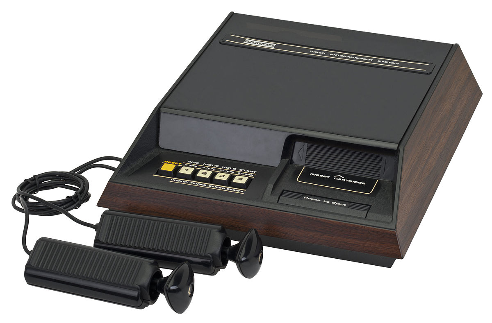

The Console
A bit of History
The Fairchild Channel F was the first programmable console based on ROM cartridges and started the second generation of consoles. It was put on sale by Fairchild Semiconductor ( a division of the parent company) in August 1976 at a cost of 169.95 US dollars. Initially called Video Entertainment System or VES, it took the name Channel F in 1977 after Atari presented its VCS console. |
 |
The Hardware
The Channel F electronics was designed using the Fairchild F8 microprocessor as CPU. The F8 CPU was very complex and offered many more input and output lines than other chips. The CPU was powerful enough to write games with artificial intelligence to allow you to play "against the computer", when other consoles only allowed you to play against another human player. The graphics of the console was rudimentary: the screen had a resolution of 128×64 pixels; for the background it could display only 1 color chosen among 4 for each line of the image, while for the main graphics you could choose only between 3 main colors, red, green and blue, or white in case the background was black. The RAM memory was 64 bytes.
- CPU: Fairchild F8 (8-bit)
- RAM: 2KB, plus 64 bytes of scratchpad memory
- Input: two controllers
- Output: wired video signal
Games Supported

|
The amonunt of games released with this console is not huge: only twenty-seven games cartridges were released for the Fairchild Channel F. It has be to be said that several of these cartridges were capable of playing more games (example: Videocart 1 has Tic-Tac-Toe, Shooting Gallery, Doodle and Quadra Doodle) In addition to these, two standard games were sold together with the console: Tennis and Hockey. An unusual feature of this console are the incredibly colorful artwork of the games cartridges. Fun fact: the Pac-Man cartridge, aka Game Cartridge 27, was released for the Channel F in year 2009. |
Impact on the Market and Reception
The Channel F was launched in November 1976, nearly a year before Atari’s VCS console. It's renown to be the first console with REMOVABLE GAME CARRTRIDGES, we could call it the first console with "removable software". Its Fairchild F8 microprocessor, low resolution color graphics, and 2K RAM were outclassed by its rival despite its far superior joysticks, and its lack of the Atari’s much larger software catalog saw it steadily lose ground into the 1980s despite a hardware revamp. Surprisingly it continued production until 1983,with 250'000 units sold, by which time it must have appeared an anachronism when compared to the crop of 8-bit microcomputers.